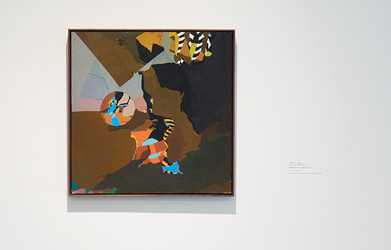

Early in his career, Wiley created intimate objects that reveal a restless artist. He also rendered in different styles, trying flat graphic representations (Relections on Egypt, 1964, shown below), delicate graphite feathering (Yang Yen, 1965) and muted surrealism (Modern Art Teacher). Wiley's work in these years is replete with pyramids, the rhinoceros and the enigmatic question mark.
Early in his career, Wiley created intimate objects that reveal a restless artist. He also rendered in different styles, trying flat graphic representations (Relections on Egypt, 1964, shown above), delicate graphite feathering (Yang Yen, 1965) and muted surrealism (Modern Art Teacher). Wiley's work in these years is replete with pyramids, the rhinoceros and the enigmatic question mark.

Reflections on Egypt, 1964, private collection, courtesy Parker Gallery, Los Angeles. Photo credit: Cleber Bonato, www.cleberrbonato.com